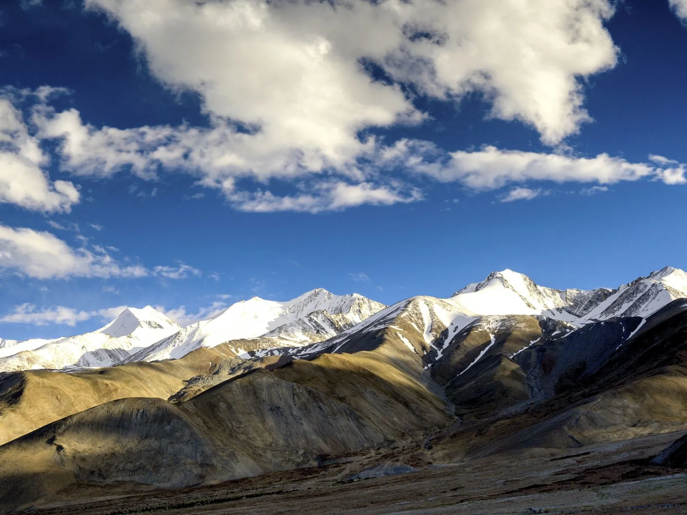
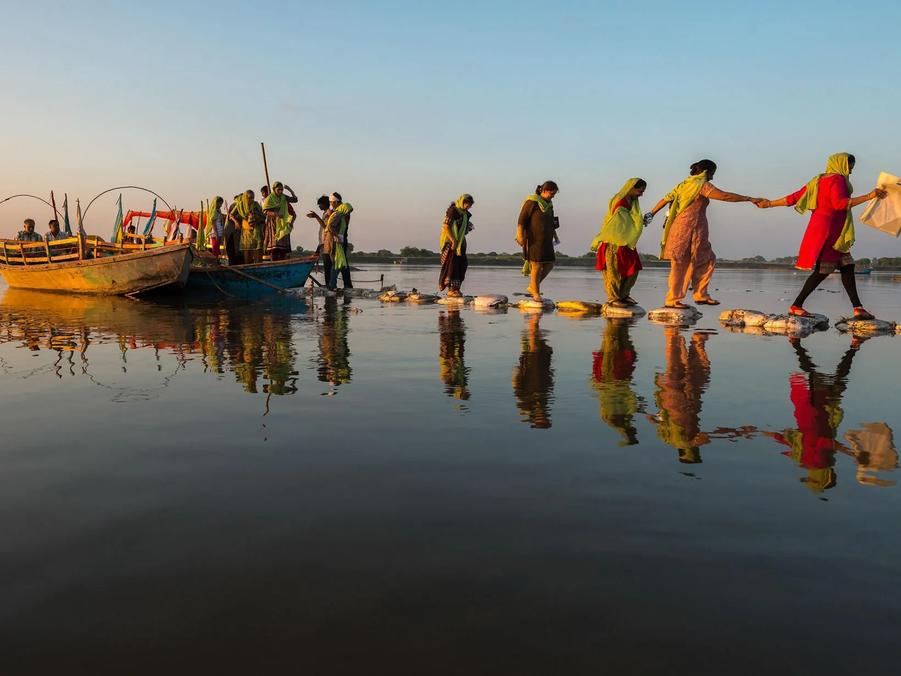
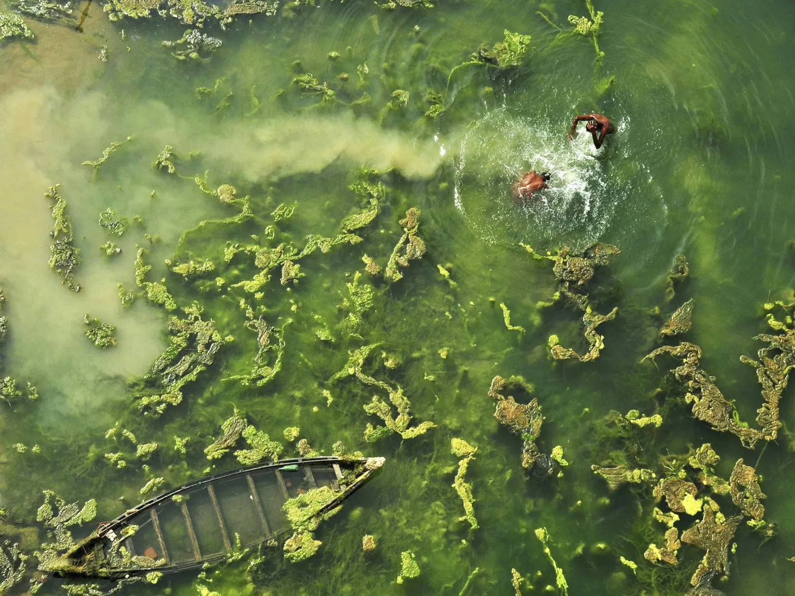

Our Priorities
We are supporting national conservation priorities by applying our expertise in science and global experience, as well as our ability to take initiatives to scale and collaborate.


Meet Our Team
We come from diverse backgrounds and have varied skills and expertise, but are united by our common love for nature.
How We Work
We support national priorities, collaborate with diverse stakeholders, focus on results and impact, and lead with science to achieve conservation success.
